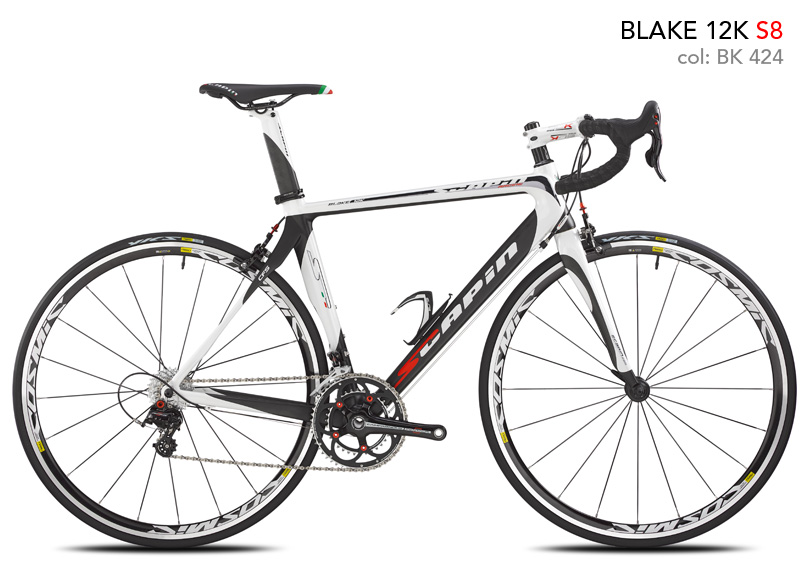

Guarnitura:Campagnolo Centaur Black/Red(50-34)
Cambio:Campagnolo Centaur
Deragliatore:Campagnolo Centaur
Comandi:Campagnolo Centaur
Freni:Campagnolo Centaur
Cassetta:Campagnolo Centaur
Catena:Campagnolo Centaur
Sella:Selle Italia X1 Scapin Flow
Reggisella:Scapin Aero Monocoque
Piantone:Fsa OS 190 LX
Piega:Fsa Vero Compact
P.Borraccia:Elite Paron Race
Pedali:Look Keo Easy
Cerchi:Miche Race 101
Mozzi:Miche Race 707
Coperture:Michelin Lithion 2 TS